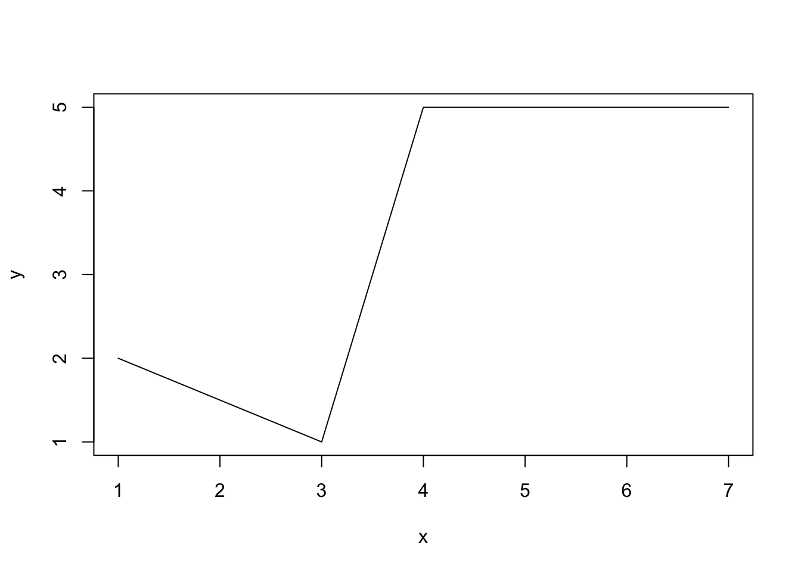

- Preface
- 1 An intro to R and RStudio
- I Probability and Simulation
- 2 Simulation of Random Variables and Monte Carlo
2.2 Monte Carlo
Solution:
For an exponential random variable with parameter \(\lambda\), the expected value is \(1/\lambda\); in this case \(0.25\). The error made was 0.072023 for \(n=10\) simulations. We increase the numbner of simulations to \(n=1000\) and get a better result
with (smaller) error -0.0064643. Finally, let’s try \(n=1,000,000\):
The error is even smaller -0.00038101.
This can be obtained quite easily by integration (by parts): \[ {\mathbb{E}}[X] = \int_{-\infty}^{\infty} x f(x)\, dx = \int_0^{\infty} x \lambda e^{-\lambda x}\, dx = \tfrac{1}{\lambda}\]
Comments:
R. The only new thing here is the command mean which computes the mean of vector.
Math. There is a lot going on here conceptually. This is the first time we used the Monte Carlo method. It is an incredibly method, as you will keep being reminded throughout this class. The idea behind it is simple, and it is based on the Law of large numbers:
Theorem Let \(X_1,X_2, \dots\) be an independent sequence of random variables with the same distribution, for which the expected value can be computed. Then
\[ \tfrac{1}{n} \Big( X_1+X_2+\dots+X_n\Big) \to {\mathbb{E}}[X_1] \text{ as } n\to\infty\]
The idea behind Monte Carlo is to turn this theorem “upside down”. The goal is to compute \({\mathbb{E}}[X_1]\), and uses a supply of random numbers, each of which comes from the same distribution to accomplish that. The random number generator inside rexp gives us a supply of numbers (stored in the vector x) and all we have to do is compute their average. This gives us the left-hand side of the formula above, and, if \(n\) is large enough, we hope that the this average does not differ too much from its theoretical limit. As \(n\) gets larger, we expect better and better results. That is why your error above gets smaller as \(n\) increases.
It looks like Monte Carlo can only be used to compute the expected value of a random variable, which does not seem like such a bit deal. It is! You will see in the sequel that almost anything can be written as the expected value of some random variable.
Solution. When \(X\) is standard normal \(Y=X^2\) has a \(\chi^2\) distribution with one degree of freedom:
In the second case, we do not know the distribution of \(X^2\), but can still do the following:
Comments:
Math+R. We are asked to compute \({\mathbb{E}}[ X^2]\), which can be interpreted in two ways. First, we can think of \(Y=X^2\) as a random variable in its own and try to take draws from the distribution of \(Y\). In the case of the normal distribution, the distribution of \(Y\) is known - it happens to be a \(\chi^2\)-distribution with a single degree of freedom (don’t worry if you never heard of it). We can simulate it in R by using its R name chisq and
get a number close to the exact value of \(1\).
The case of a geometric distribution is seemingly more difficult, because we do not know what the distribution of \(Y=X^2\) is and there is no corresponding R name to put the prefix r in front of. What makes the simulation possible is the fact that \(Y\) is a transformation of
a random variable we know how to simulate. In that case, we simply simulate the required number of draws x from the geometric distribution (using rgeom) and then apply the transformation \(x \mapsto x^2\) to the result. The transformed vector y is then nothing but the sequence of draws from the distribution of \(X^2\). Btw, we could have done the same thing in the case of the normal random variable, too - there was no need to recoqnize its square as a \(\chi^2\) random variable:
The idea described above is one of main advantages of the Monte Carlo technique: if you know how to simulated a random variable, you also know how to simulated any (deterministic) function of it. That fact will come into its own a bit later when we start working with several random variables and stochastic processes, but it can be very helpful even in the case of a single random variable, as you will see in the next problem.
Solution: The estimated probability:
The exact probability:
The error is -0.0013353.
Comments:
R. In R, the symbol > is an operation, which returns a boolean (TRUE or FALSE) value. For example:
It works with vectors, too, but now the output is a vector of boolean values:
You can even compare a vector and a scalar:
Therefore, the vectory in the solution is a vector of length \(100000\) whose elements are either TRUE or FALSE; here are the first 5 rows of the “spreadsheet” (called a data frame or a tibble in R) with columns x and y from our solution:
| x | y |
|---|---|
| 1.9493 | FALSE |
| -1.1015 | TRUE |
| 1.0448 | TRUE |
| -0.1384 | TRUE |
| -0.2573 | TRUE |
Finally, z contains the mean of y. How do you compute a mean of boolean values? In R (and many other languages) TRUE and FALSE have default numerical values, usually \(1\) and \(0\). This way, when \(R\) is asked to compute the sum of a boolean vector it will effectively count the number of values which are TRUE. Similarly, the mean is the relative proportion of TRUE values.
| 0 | 1 |
|---|---|
| 1-p | p |
for some \(p \in [0,1]\). The parameter \(p\) is nothing but the probability \({\mathbb{P}}[Y=1]\).
So why did we decide to transform \(X\) into \(Y\)? Because of the following simple fact: \[ {\mathbb{E}}[ Y] = 1 \times p + 0 \times (1-p) = p.\] The expected value of an indicator is the probability \(p\), and we know that we can use Monte Carlo whenever we can express the quantity we are computing as an expectated value of a random variable we know how to simulate.
Solution.
nsim <- 1000000
x <- runif(nsim, -1, 1)
y <- runif(nsim, -1, 1)
z <- (x^2+y^2) < 1
(pi_est <- 4* mean(z))
#R> [1] 3.141728
(err <- pi_est - pi)
#R> [1] 0.0001353464Since we know the “exact” value of \(\pi\), we can compute the error {r} format(err, digits=5).
Comments.:
Math.
 As we learned in the previous problem, probabilities of events can be computed using Monte Carlo, as long as we know how to simulate the underlying indicator random variable. In this case, we want to compute \(\pi\), so we would need to find a “situation” in which the probability of something is \(\pi\). Of course, \(\pi>1\), so it cannot be a probability of anything, but \(\pi/4\) can, and computing \(\pi/4\) is as useful as computing \(\pi\). To create the required probabilistic “situation” we think of the geometric meaning of \(\pi\), and come up with the following scheme. Let \(X\) and \(Y\) be two independent uniform random variables each with values between \(-1\) and \(1\). We can think of the pair \((X,Y)\) as a random point in the squre \([-1,1]\times [-1,1]\). This point will sometimes fall inside the unit circle, and sometimes it will not. What is the probability of hitting the circle? Well, since \((X,Y)\) is uniformly distributed everywhere inside the square, this probability shoule be equal to the portion of the area of our square which belongs to the unit circle. The area of the square is \(4\) and the area of the circle is \(\pi\), so the required probability is \(\pi/4\). Using the idea from the previous problem, we define the indicator random variable \(Z\) as follows
\[ Z = \begin{cases} 1 & (X,Y) \text{ is inside the unit circle, } \\ 0 & \text{ otherwise.}
\end{cases}
= \begin{cases} 1& X^2+Y^2 < 1, \\ 0 & \text{ otherwise.} \end{cases}\]
As we learned in the previous problem, probabilities of events can be computed using Monte Carlo, as long as we know how to simulate the underlying indicator random variable. In this case, we want to compute \(\pi\), so we would need to find a “situation” in which the probability of something is \(\pi\). Of course, \(\pi>1\), so it cannot be a probability of anything, but \(\pi/4\) can, and computing \(\pi/4\) is as useful as computing \(\pi\). To create the required probabilistic “situation” we think of the geometric meaning of \(\pi\), and come up with the following scheme. Let \(X\) and \(Y\) be two independent uniform random variables each with values between \(-1\) and \(1\). We can think of the pair \((X,Y)\) as a random point in the squre \([-1,1]\times [-1,1]\). This point will sometimes fall inside the unit circle, and sometimes it will not. What is the probability of hitting the circle? Well, since \((X,Y)\) is uniformly distributed everywhere inside the square, this probability shoule be equal to the portion of the area of our square which belongs to the unit circle. The area of the square is \(4\) and the area of the circle is \(\pi\), so the required probability is \(\pi/4\). Using the idea from the previous problem, we define the indicator random variable \(Z\) as follows
\[ Z = \begin{cases} 1 & (X,Y) \text{ is inside the unit circle, } \\ 0 & \text{ otherwise.}
\end{cases}
= \begin{cases} 1& X^2+Y^2 < 1, \\ 0 & \text{ otherwise.} \end{cases}\]
Problem 2.10 1. Write an R function cumavg which computes the sequence of running averages of a vector, i.e., if the input is \(x=(x_1,x_2,x_3,\dots, x_n)\), the output should be
\[ \Big(x_1, \frac{1}{2} (x_1+x_2), \frac{1}{3}(x_1+x_2+x_3), \dots, \frac{1}{n} (x_1+x_2+\dots+x_n)\Big).\] Test it to check that it really works.
- Apply
cumavgto the vector \(4 z\) from the previous problem and plot your results (use a smaller value fornsim. Maybe \(1000\).) Plot the values against their index. Add a read horizontal line at the level \(\pi\). Rerun the same code (including the simulation part) several times.
Solution
cumavg <- function(x) {
c <- cumsum(x)
n <- 1:length(x)
return(c / n)
}
x <- c(1, 3, 5, 3, 3, 9)
cumavg(x)
#R> [1] 1 2 3 3 3 4nsim <- 1000
x <- runif(nsim, -1, 1)
y <- runif(nsim, -1, 1)
z <- (x ^ 2 + y ^ 2) < 1
pi_est = cumavg(4 * z)
plot(1:nsim, pi_est,
type = "l",
xlab = "number of simulations",
ylab = "estimate of pi",
main = "Computing pi by Monte Carlo"
)
abline(pi, 0,
col = "red")
Comments:
R.
Part 1: The function cumavg can be written in many ways; the one in the solution is sleek because it does not use any for loops. It is also faster than the other two implementations below. It relies on the fact that many natural operatrions in R are already vectorizes. The builtin function cumsum performs most of the work - once we have partial sums, we simply need to divide each one of them by the index of its position in the vector. If you wanted to use for loops and not rely on the function cumsum, you could write something like this:
cumavg <- function(x) {
out <- numeric(length(x))
for (i in 1:length(x)) {
p <- 0
for (j in 1:i) {
p = p + x[j]
}
out[i] = p / i
}
return(out)
}The statement out <- numeric(length(x)) is there to ask R to reserve enough room (memory) for a numeric vector the same size as x. It is not neccessary, but it is a good idea to get into the habit of doing it because is makes your code both faster and easier to read.
Here is another way, using the sum function:
cumavg <- function(x) {
out = numeric(0)
for (i in 1:length(x)) {
out = c(out, sum(x[1:i]) / i)
}
return(out)
}The line out = c(out, sum(x[1:i]) / i) appends the value sum(x[1:i]) / i to the end of the vector out. Note that x[1:i] is the vector x indexed by the sequence 1:i (i.e., 1,2,...,i), which is nothing other than the vector containing the first i elements of x. We also “pre-declared” the vector out in the statement `out = numeric(0)’. This time we only made sure that out is an empty numerical vector because of the way we build it incrementally. This is, in general, not a very efficient way of doing things, but it will do just fine for small vectors.
Part 2. This course is not about R graphics, but I think it is a good idea to teach you how to make basic plots in R. This is what the functions plot and abline (and some others) do. I have already mentioned the fact that R has a number of high-quality graphics packages (like ggplot2), but the builtin R graphics is certainly good enough for “quick-and-dirty” plots.
The main purpose of the function plot is to plot scatterplots:
The corresponding entries of vectors x and y are paired (into \((1,2)\), \((3,1)\), \((4,5)\) and \((7,5)\) in this case) and these pairs are used as coordinates of points. By default, each point is marked by a small circle, but this, and many other things, can be adjusted by numerous additional arguments. One of such arguments is type which determins the type of the plot. We used type="l" which tells R to join the points with straight lines:
 The other arguments,
The other arguments, xlab, ylab and main determine labels for axes and the entire plot. The function abline(a,b) adds a line \(y = a x + b\) to an already existing plot. It is very useful in statistics if one wants to show the regression line superimposed on the scatterplot of data. Finally, the argument col, of course, determines the color of the line. To learn about various graphical parameters, type ?par.
Math.
The conceptual reason for this exercise is to explore (numerically) the kinds of errors we make when we use Monte Carlo. Unlike the deterministic numerical procedures, Monte Carlo has a strange property that no bound on the error can be made with absolute certainty. Let me give you an example. Suppose that you have a biased coin, with the probabilty \(0.6\) of heads and \(0.4\) of tails. You don’t know this probability, and use a Monte Carlo technique to estimate it - you toss your coin \(1000\) times and record the number of times you observe \(H\). The law of large numbers suggests that the relative frequency of heads is close to the true probability of \(H\). Indeed, you run a simulation
set.seed(1234)
x <- sample( c("T","H"), 1000, prob = c(0.4, 0.6), replace = TRUE)
y <- x == "H"
mean(y)
#R> [1] 0.594and get a pretty accurate estimate of \(0.594\). If you run the same code a few more times, you will get different estimates, but all of them will be close to \(0.6\). Theoretically, however, your simulation could have yielded \(1000\) Hs, which would lead you to report \(p=1\) as the Monte-Carlo estimate. The point is that even though such disasters are theoretically possible, they are exceedingly unlikely. The probability of getting all \(H\) in \(1000\) tosses of this coin is a number with more than \(500\) zeros after the decimal point.
The take-home message is that even though there are no guarantees, Monte Carlo performs well vast majority of the time. The crucial ingredient, however, is the number of simulations. The plot you were asked to make illustrates exactly that. The function cumavg gives you a whole sequence of Monte-Carlo estimates of the same thing (the number \(\pi\)) with different numbers of simulations nsim. For small values of nsim the error is typically very large (and very random). As the number of simulations grows, the situations stabilizes and the error decreases. Without going into the theory behind it, let me only mention is that in the majority of practical applications we have the following relationship:
\[ error \sim \frac{1}{\sqrt{n}}.\]
In words, if you want to double the precision, you need to quadruple the number of simulations. If you want an extra digit in your estimate, you need to multiply the number of simulations by \(100\). Instead of going further into the theory, here is an image where I superimposed \(40\) plots like the one you were asked to produce (the red lines are \(\pm \frac{4}{\sqrt{n}}\)):